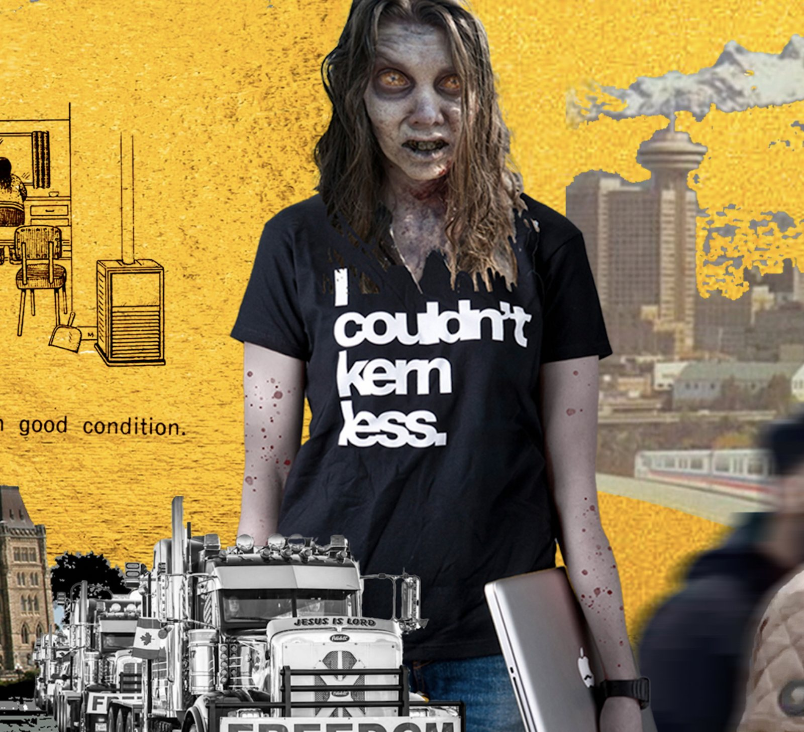
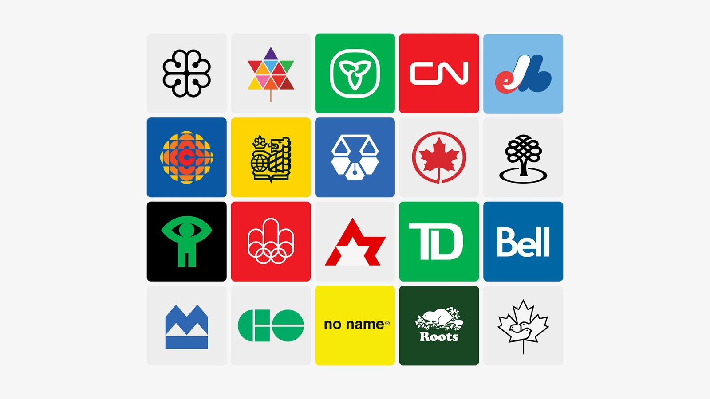
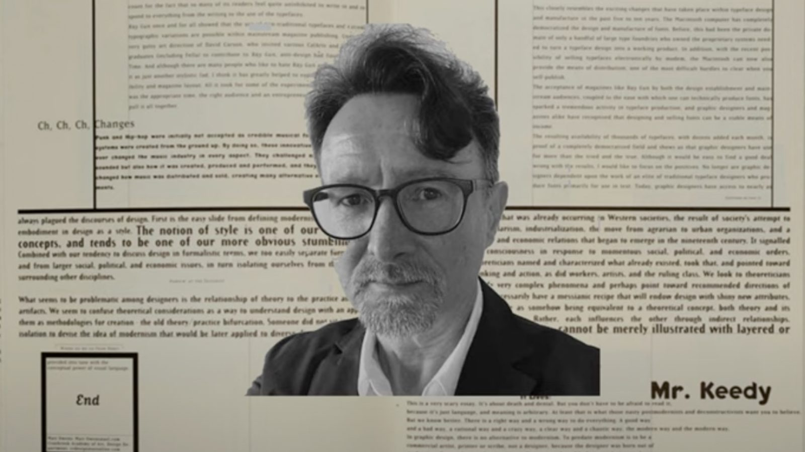
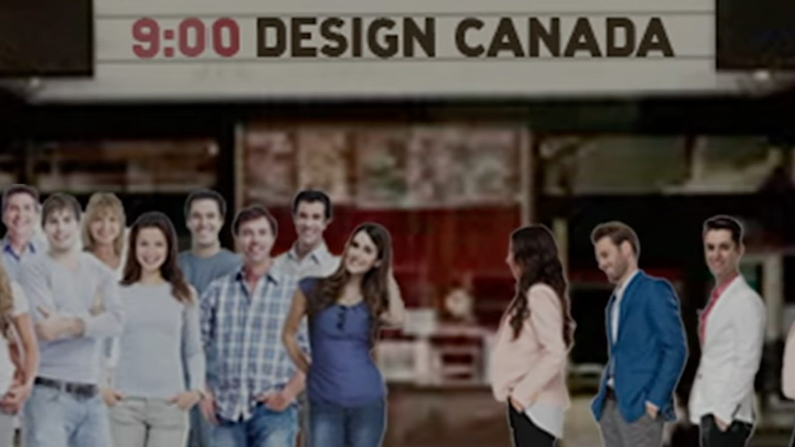
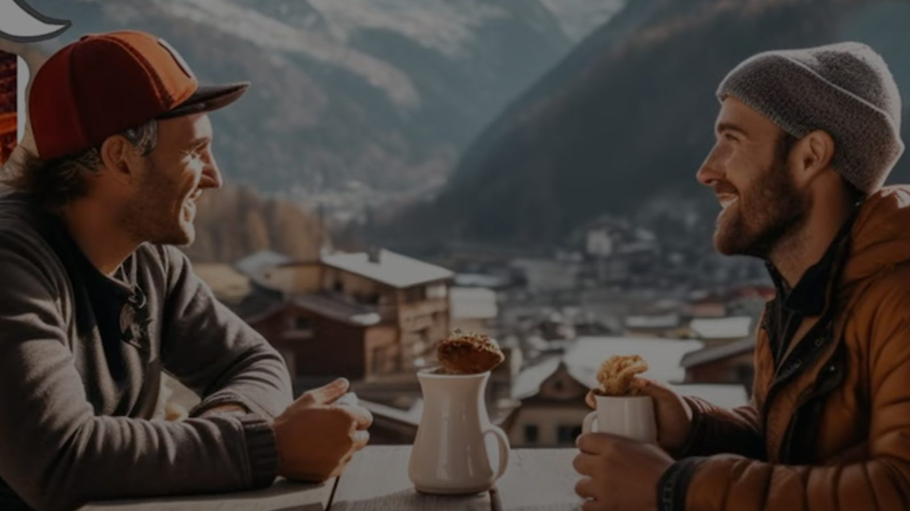

This essay was published in the first edition of An Imperfect Index. During periods of writers-block, I started to make digital colleges based on the essay. Those collages eventually evolved into a number of narrated video excerpts, which can be viewed throughout this piece.
Content note: This essay mentions suicide.
* * *
Redrawing the Map
There’s no question that the 60s were a time of significant cultural change in Canada. The federal government enacted the Canadian Bill of Rights, which expanded the rights and freedoms of minorities, including indigenous peoples. Voting rights were expanded to include minorities. The number of immigrants from Asia and other regions of the world increased. Hard and fast, the changes kept coming and the bubble of Canada’s European colonial hegemony started to burst. It put many Canadians on edge, so much so that when modernism came along with its promise of singularity reinforced by rationalist universalism, they welcomed it with open arms. Modernism was a way for Canadians to filter out the complexity that came with the country’s growing plurality and gave them an abstract sense of unity, simplicity, and clarity. As researcher and literary theorist, Terry Eagleton explains in Slavoj Žižek’s book Mapping Ideology (2012):
“[Ideology] springs from a situation in which social life has become too complex to be grasped as a whole by everyday consciousness. There is thus the need for an imaginary model of it, which will bear something of the oversimplifying relation to social reality that a map does to an actual terrain.”

Canada’s Modernist Map
Presently, relics of Canada’s modernist map can be seen at every turn, awkwardly reminding us of the modernist utopia we once hoped we could be. But as immigrants open everything from bodegas to medical clinics within our decaying modernist architecture, and design struggles to negotiate its role beyond corporate identity and marketing, it’s clear that the Canada of today couldn’t be further away from utopia. If anything, our cultural terrain has become more difficult to navigate now than ever before. Over the past few years alone we’ve seen a lot happen: from a global reckoning of inequality that has empowered us to unite against racism and hate, to the discovery of thousands of indigenous children in unmarked graves, to white Canadian nationalists occupying our nation’s capital for ‘freedom.’ Climate change; The global pandemic; Ukraine; Palestine; WWIII. If designers weren’t fully convinced that the oversimplified ideological map of modernism was useless before, today’s cultural realities should have them throwing that map into an incinerator. Modernism arose out of that same mix of complexity and chaos. Will designers allow history to repeat itself, or will they redraw the map?
Clues to the answer may be found in the historical canon of Canadian graphic design. For those not familiar with it, it tells the story of modernist graphic design, its role in pulling us out of the shadow of British rule, and thrusting us into a new ‘golden era’ filled with ‘optimism, growth, and modernity.’ But modernism is not experienced the same by everyone. While this glorified portrayal of modernism remains central to the canon’s ‘glowing heart’, those on the dark side of modernity continue to dwell in substandard conditions created by the same ‘glowing’ ideology that blinds Canadian design. Adding to modernism’s complexity are its many definitions and interpretations, but for this essay, I’d like to focus on modernism in its relation to ideology. More specifically, the driving forces behind modernist ideology, such as universality, rationalism, singular answers, and progress. My intention is, that while modernism in the context of corporate identity may appear different from modernism in the context of things like governance and housing policy (more on that later), the same core values are at play.
The Living Dead
“In most areas of cultural production like art, architecture, music, and literature, modernism was just one more event in a continuing life cycle. Graphic design, on the other hand, did not have sufficient time to develop a mature sense of self—the umbilical cord had not been severed yet. So when modernism died, many designers’ ideology died with it. However, they did not go peacefully into that dark night. They refused to acknowledge their own ideological demise, and they continue to haunt the living, moaning and groaning because they no longer belong to this world. That is the fate of the Zombie Modernist, the living dead who design among us”
writes Mr. Keedy in his 1995 essay Zombie Modernism (1995). To describe what has happened in Canadian design since Mr.Keedy penned that essay almost 30 years ago can be found in the essay’s first two words: “it Lives!” Zombie Modernism is (un)alive and well here in Canada, no thanks in part to Blair Thomson’s Canada Modern archive and Greg Durrell’s documentary design film, Design Canada (2018).

Zombie Modernism
Both the archive and the film take audiences on a quixotic quest through Canada’s history of graphic design through the lens of modernism, which predictably, reminds us of how overwhelmingly white and male Canada’s historical canon of graphic design is. The link between white supremacy and modernism goes back centuries — and is discussed at length across many different disciplines like art, design, and architecture — but there’s little to no acknowledgement of this in either the archive or film. I used to shake my head in frustration every time I viewed the archive and film because, from a historical and critical perspective, they’re just so incredibly narrow. But the more I learn, the more I realize that when it comes to modernism, exclusion, and singularity are just the nature of the beast.
A Golden Era for Who?
Let’s start by looking at the written language of the Zombie Modernist; how do they describe their purpose and relevance in our world? Here are a couple of key sentences from the Canada Modern About page:
“Canada Modern exists to preserve, document, educate and inspire, to build a new and richer understanding of what can clearly be seen as a seminal point in Canada’s development as a nation — one of optimism, growth, and modernity […] Perhaps through a greater understanding of Canada’s first golden era of design we can begin the process of heralding a new one.”
It’s kind of a progressive Canadian word salad, but with a little prodding come some serious questions. For instance, they suggest that there was this universal experience of ‘optimism, growth, and modernity.’ Yet, how that optimism, growth, and modernity were experienced depended largely on one’s race, sex, and class. Indigenous communities across the country, for example, continue to suffer from modernist schemes that were enacted by the government during the 60s. While the archive is well-researched and offers interesting information about each of the artifacts in its collection, if we look at Canadian design history as a map that is drawn by Eagleton’s earlier explanation of ideology, we’d find that this research only serves to delineate the harmful modern/unmodern binaries that have since faded over the decades, or that may have been drawn over by other, more expansive and inclusive ideologies.
Finally, it says:
“Perhaps through a greater understanding of Canada’s first golden era of design we can begin the process of heralding a new one.”
In other words, if we collectively meditate on this first ‘golden era’ of design — a time of deep racial inequality and patriarchal dominance in design and in society as a whole — we’ll all reach some weird collective enlightenment and herald in a new golden era? Again, a golden era for who? And how can there be a true ‘greater understanding’ of Canadian history when viewers of the archive are encouraged to believe that a single norm of thought (modernism) and experience (optimism, progress, etc) was universal and experienced by all? None of the artifacts are approached from the standpoint of race, sex, or class, and there is absolutely no interrogation of the harmful binaries that modernist ideology promotes.
The Commute
Greg Durrell’s documentary Design Canada (2018), unfortunately, does a similar thing. The slogan for the Design Canada film is:
“Through the lens of graphic design, Design Canada follows the transformation of a nation from a colonial outpost to a vibrant and multicultural society.”
When Design Canada came out in 2018, I was living in New Westminster, around 20km away from Vancouver where they were having a local screening of the film. As a history fan, I admittedly fell for the film’s progressive slogan and decided to go check it out. The commute between New West and Vancouver is about 30 minutes long, and the travel experience never fails to be a complete melting pot of culture: nationalities, languages, food. So much so, that when I arrived at this movie theater brimming with around 85-90% middle-class white people, I had a mild case of culture shock. Ironically, the commute became a kind of symbolic reversal of the film’s catchy slogan. Instead of following the transformation of a nation “from colonial outpost to vibrant and multicultural society,” the only transformation I experienced was from that of a vibrant and multicultural commute, to a white colonial outpost in the form of a theater. And I hadn’t even watched the film yet.

Commute to the Colonial Outpost
With a run-time of just over an hour, the film itself isn’t very long, but after stepping into the theater from the melting pot of plurality that was my commute, I found it difficult to watch. Burton Kramer unfurls decades-old artifacts from his personal collection, including the original CBC logo he designed in 1974. You have Pierre-Yves Pelletier, design director for the 1976 Montreal Olympics, showing his work. Hans Kleefeld revisits his minimalist logo for the Toronto-Dominion Bank. A fascinated Masimo Vignelli redraws Allan Fleming’s iconic logo for the Canadian National Railway. Almost everyone in the movie is white and male, and pretty much all of the work that is featured is modernist. Many of the designers are also interviewed in their own meticulously designed studios and homes. It’s a privileged, sanitized, version of Canada, its people, and its history tied together with a weird adulation and endearing nostalgia for the ‘golden age’ of modernist graphic design.
Putting the Critic in the Film
What struck me even more was the lack of criticism the film received from Canada’s Design community and the Canadian media. The only saving grace was this critical review by cultural researcher and (former) graphic designer Michèle Champagne for C Magazine, saying:
“[The film is] a fascinating — if unintentional — look at a world where Canada’s colonial project hides in plain sight.”
She also quotes Kwakwaka’wakw artist Marianne Nicolson: “There is a desire to create an empty space for pure celebration. But that requires the denial of many realities, and of Peoples who live here—Indigenous and non-Indigenous ones.”
As Champagne points out, colonial and patriarchal constructs freely and fluidly dominate the film with little to no interrogation, but they would have done so with complete abandon if it weren’t for some last minute changes. As John L. Walters reveals in his review of the film for Eye Magazine (which includes snippets of an in-person interview with Durrell), there was little to no reference to Canada’s history of race and gender inequality in the original version of the film. Apparently Durrell was conscious of this — “[it was] something that bothered him” — but it was only after a screening with friends that he realized how bad it really was. In Walters interview with Durrell, they continue to chat about the film’s race and gender issues (over coffee and croissants in Switzerland), when Durrell enthusiastically recalls the big ‘ah-ha’ moment he had in addressing the glaring oversight:
“Instead of the viewer telling me there’s a gender inequality problem, I want to tell the viewer. I’m going to put the film critic in the film!”
To do this, Durrell tells Walters how he hired journalist Hannah Sung “to discuss issues of race and gender and immigration.” Her voice was then added early in the movie: “There was only a certain kind of immigrant that Canada really wanted. It wasn’t a multicultural society,” Sung says. But as Champagne points out in her review: “[Sung’s] presence is quickly upstaged by a grand progressive narrative, modern images and happy songs.” In summarizing Durrell’s solution of adding Sung’s brief audio appearance, Walters states: “Happily, these last-minute changes worked well.”
But did they? As Keedy points out: “[Criticism] has prompted some modernist designers to re-evaluate and re-define modernism. They want to appear relevant, without giving up the privileged position that a universalist dogma constructs.” To me, Durrell’s last-second effort to insert Sung’s voice is a prime example of this. But as Keedy says: “These last ditch efforts, superficially pay lip service to — and subsequently disavow — the importance, complexity, and diversity of contemporary culture.”
This approach is problematic from pedagogical standpoint as well. In her book Teaching to Transgress (1994) — where she talks about decentering whiteness in the classroom — American author, theorist, educator, and social critic Bell Hooks says:
“All too often we found a will to include those considered ‘marginal’ without a willingness to accord their work the same respect and consideration given other work. In Women’s Studies, for example, individuals will often focus on women of color at the very end of the semester or lump everything about race and difference together in one section.”

Last Minute Lumping of Race and Indifference
It’s difficult for me to understand how a film could get so carried away with such an ad-hoc, one sided representation of the Canadian experience at a time when race and gender have been so front and center. Over the past 10-15 years we’ve had wake-up call after wake-up call: The Idle No More movement (2012-Present), the Residential School Inquiry and final report (2007-2015), and the National Inquiry into Missing and Murdered Indigenous Women and Girls (2015-2019) — all national headlines. Not to mention everything that was happening south of the border: The Black Lives Matter movement (2013-Present), The 2017 Women’s March, Trump’s immigration ban (2017), and much more. Here we had all of these seismic cultural events, complete with aftershocks, but it still took 6 years and a screening with some buddies to realize they might have left a few important things out?
The Backers
I wanted to say something in 2018, but there was so much positivity and celebration from the design community and press that I eventually caved into thinking that I was being overly negative. One thing that eventually helped me break through that delusion — aside from discovering the amazing writing and work of designers like Silas Munro, Ian Lynam, Francisco Laranjo, Michèle Champagne, Ramon Tejada, Jarrett Fuller, Dr.Dori Tunstall, and many more — was Martha Scottford’s essay Messy History vs. Neat History (1994), and her follow-up Googling the canon (2008). In them, Scottford analyzes Meggs’ History of Graphic Design (and later Google) to reveal the lack of female representation within the historical canon of graphic design.
In the spirit of her work, I decided to take a closer look at the Design Canada programme given to me at the Vancouver screening by Durrell himself. It included a long list of the film’s Kickstarter backers who contributed $200 or more to their Design Canada Kickstarter campaign. Sure enough, roughly 90% of the names are of obvious European descent. Keep in mind I don’t have the full list of 1,483 backers, but if we look at this short list of major donors — a list of people who really, really, really wanted to see this movie exist in the world — it’s clear that the pitch for Design Canada disproportionately appealed to white people more than anyone else. How is it that the celebrated cast of heroes and talking heads that make up the progressive narrative of this film are basically a mirror image of those who financially backed it? Was it some weird coincidence that those backers were also a mirror image of those who attended the screening with me as well? Of course we can’t assume they all knew race and gender would be such an afterthought in this film, but then again nobody really complained after watching it, either.
Kickstarter backers who pledged $200 or more
European/Global North Decent: 109/133
Asian Decent: 6/133
Other/Unsure: 16/133
Living in the New Houses
Most of the modernist graphic design we see in places like Canada Modern and Design Canada come from front-facing corporate and government identity systems, but churning beneath these meticulously crafted presentations of progress, universalism, and simplicity, was the ongoing colonial extraction project we call Canada. Canada’s modernist schemes were cruel and depraving towards those who didn’t fit into white society’s vision of modernity, and the graphic design artifacts that accompanied these schemes reveal a stark counter narrative to Canada’s ‘modern’ identity.
For example, during the Cold War years of 1965-1970, the Canadian Department of Indian and Northern Development implemented something called the Eskimo Rental Housing Program (ERHP) across parts of the Central and Eastern Arctic. There were claims that the program was a welfare-improving measure, but by examining the work of Inuit graphic artists alongside archival visual culture materials, scholar Erika Ashley Cuoto provides evidence that the ERHP “was an act of acculturation, meant to sedentarize and drastically alter social patterns of the Inuit for the intended and exclusive benefit of the Canadian state.” In her MA thesis titled The Eskimo Rental Housing Program (1965-69): A Case Study in Cold War Authoritarian High Modernism (2015), she points to an 80 page coil-bound booklet titled Living in the New Houses which served as an “educational guide” for the “Eskimo” people on how to take care of prefabricated rental homes provided to them as part of the ERHP. But it also expands well beyond the scope of helpful home maintenance tips, with “factual information” on everything from “Why the Body Needs Food” to how you should clean the bathroom.
Living in the New Houses, c. 1968
Although the guide is written in English—not Inuit, the language of the intended readership—the designer still seems to pay careful attention to make it as easy to understand as possible. Each of the 38 full-page illustrations — depicting the Inuit people living in mass produced cookie-cutter homes designed for the nuclear family — get plenty of whitespace, making them the focal point of each spread. The simple sentences of text that accompany each illustration are crudely typeset, but are also very legible with high point sizes, ample letter spacing, and generous margins — reminiscent of a children’s book. You’ll also see a few pages in the back that are left blank for note taking. But despite all of these sort of demeaning, paternalistic gestures of reader-friendly design, the ERHP laid out in no uncertain terms the expectations of the Canadian government: “...if anyone does not keep his house clean and repaired, or does not pay the rent, the Housing Association Council will move him into a smaller house.” (Couto, 2015)
The guide itself may have been easy enough to file away into relative obscurity, but sadly the architectural component of this modernist design scheme — the actual houses themselves — still stand. Many don’t have running water, and are overcrowded: “It’s not uncommon to see up to four generations living in a one-bedroom house.” (Hutter, CBC, 2017) ‘Home is where the heart is’ as the old saying goes, and this couldn’t be more evident in the broken hearts, broken lives, and mental health crisis brought on by these deplorable living conditions. In a CBC story covering the housing crisis in Nibinamik First Nation (Pop.300), they report how the community’s youth council leader, Natasha Sugarhead, had been spending more and more nights on suicide watch: “In her young life, she has lost all three of her brothers to suicide.” (Hutter, CBC, 2017)
As a form of graphic design, I think the booklet offers a far more inclusive glimpse into Canadian modernism than any of its front-facing government or corporate cousins (CBC, CN logo, etc). While the ERHP booklet isn’t as slick as the visual systems that are so coveted and worshiped by design bro’s across Canada, the state-propelled modernist agenda of the booklet is laid bare, explicitly cutting through the slickly produced narrative that currently surrounds the historical canon of Canadian graphic design: The narrative that’s chock-full of wholesome nation building, vibrant multiculturalism, and tolerance. The narrative aggrandized by films like Design Canada and archival websites like Canada Modern, and then cheered-on without question by Canada’s complacent design community. To counter this, I think it’s important that more artifacts like the ERHP booklet come to light, and that they’re recognized for what they are: Modernist Canadian Graphic Design. It’s an important distinction because it shatters the dominant narrative, and empowers the countless voices that experienced the dark side of modernism; voices and experiences that continue to be eaten alive by our very own (and community endorsed) brand of Zombie Modernism.
* * *
Bibliography
- Page 179, Chapter 9: Ideology and its Vicissitudes in Western Marxism, by Terry Eagleton. From the book “Mapping Ideology”, Edited by Slavoj Žižek, Publisher: Verso Books, 1994, Book link: https://analepsis.files.wordpress.com/2011/08/415_mapping-ideology-slavoj-zizek.pdf
- “Zombie Modernism” by Mr. Keedy, From the Magazine “Emigre #34: Rebirth of Design”, Pages 17-39, Year: 1995, Link: https://readings.design/PDF/Keedy,%20Jeffrey%20%E2%80%94%20Zombie%20Modernism%20(1995).pdf
- Design Canada, Eye Magazine review (online): https://www.eyemagazine.com/feature/article/they-made-canada
- “Greg Durrell: Design Canada” by Michèle Champagne, C Magazine, Issue 141, Spring 2019
- “Messy History vs. Neat History: Toward an Expanded View of Women in Graphic Design.” by Martha Scotford, From the Magazine: “Visible Language”, v28 n4 p368-88, Fall 1994. Link: https://readings.design/PDF/messy-history-vs-neat-history-toward-an-expanded-view-of-women-in-graphic-design.pdf
- “Googling the Canon” by Martha Scotford, Publication: Eye Magazine (online), 29 July 2008. Link: https://www.eyemagazine.com/blog/post/googling-the-canon
- “The Eskimo Rental Housing Program (1965-69): A Case Study in Cold War Authoritarian High Modernism” by Erika Ashley Couto, 2015, Link: https://spectrum.library.concordia.ca/id/eprint/980384/1/Couto_MA_F2015.pdf
- “Living in the New Houses”, Publisher: Education Branch, Department of Indian and Northern Affairs Development, Canada, Link: https://s3.documentcloud.org/documents/4118335/Copy-of-LivingInTheNewHouse-1.pdf
- “Northern Ontario First Nation residents get to design their own homes in pilot project”, Kristy Hutter, CBC News, Nov 01, 2017, Link: https://web.archive.org/web/20220322032357/https://www.cbc.ca/news/canada/nibinamik-pilot-project-home-design-1.4374183